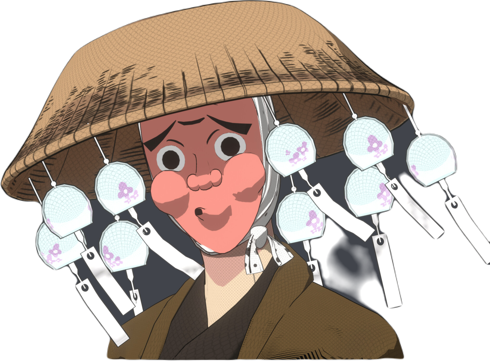
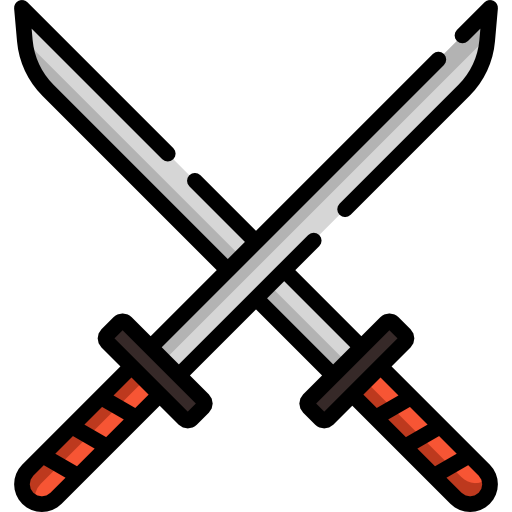

Dans l'obscurité d'une nuit orageuse, quelque part au cœur du Japon ancien, résidait un maître forgeron nommé Akira. Akira était connu pour sa quête de perfection, une obsession qui le poussait à repousser les limites de l'art de la forge.
Un jour, alors qu'il parcourait les montagnes déchaînées, il trouva un fragment d'étoile, tombé du ciel lors d'une pluie de météorites. Convaincu que c'était un signe divin, Akira décida de forger une lame extraordinaire à partir de ce morceau cosmique.
Il commença son travail avec détermination, mélangeant l'acier le plus pur avec le fragment d'étoile. La forge devint un spectacle en soi, le métal dansant comme des flammes célestes. Il ajouta des éléments de terre, d'eau, feu et de vent, représentant les forces de la nature.
Au fur et à mesure que la lame prenait forme, Akira se sentait connecté à quelque chose de plus grand que lui. Il semblait canaliser la puissance des étoiles elles-mêmes dans cette épée. La lame était à la fois une œuvre d'art et un instrument de destin.
Lorsqu'il termina enfin, la lame scintillait d'une lueur mystique. Elle semblait contenir l'univers tout entier dans son acier. C'était le katana ultime, prêt à trancher l'histoire et à écrire de nouvelles légendes.
Cette épée, baptisée "Stella Noctis", la Star de la Nuit, devint le symbole de courage et de détermination. Elle fut transmise de génération en génération, chaque porteur ressentant la présence des étoiles dans son âme.
"Nihonto Nexus s'engage aujourd'hui à perpétuer cette quête de perfection. Chaque katana que nous présentons porte en lui l'esprit de Stella Noctis, invitant ainsi à embrasser l'excellence et à affronter l'inconnu avec grâce."